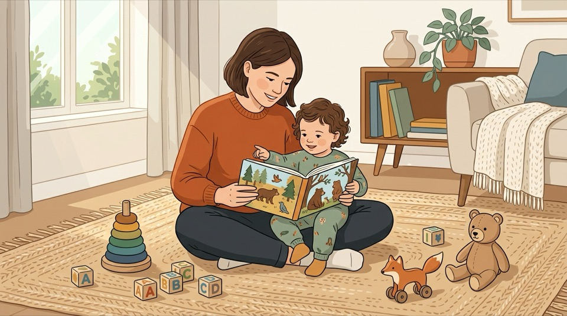
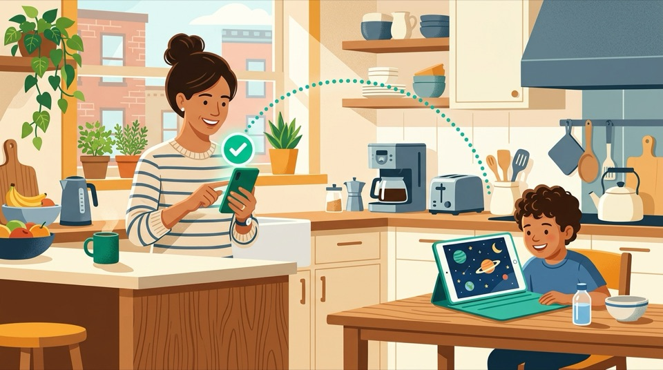
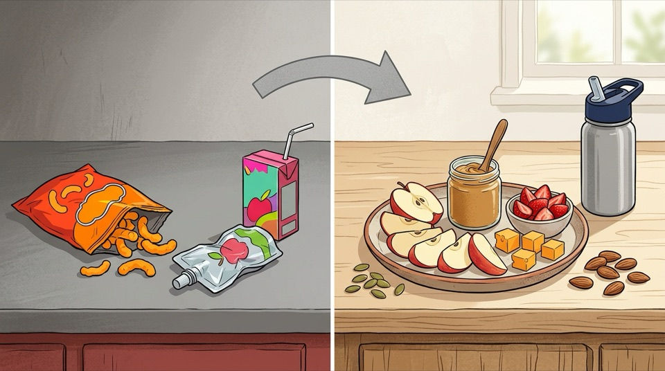

In a Rush? Save or Screenshot These 6 Pillar Infographics
Designed for busy parents standing in the grocery aisle or setting up a tablet. Tap any infographic to open fullscreen on your phone, download the image, or jump straight to that pillar.


Interactive Child Age-Stage Daily Rhythm & Printable Fridge Quick-Sheet
Select your child's developmental stage below to generate a 24-hour rhythm (screen cap, melatonin cutoff, matched low-stimulus channels, tantrum-free games, whole-food swaps, and screen-free audio/books) ready to sync across all 4 directories or print for your refrigerator.
Top 10 Family Rules & Decision Framework for Parents
Clear, actionable paths across digital viewing, interactive play, daily whole-food brain nutrition, and screen-free audio & reading.
🧭 View / Collapse All 10 Core Family Rules & Visual Cards

Best for: Infants & Toddlers (Ages 0–3)
Eliminates overstimulation (ESS), prevents the Video Deficit Effect in speech acquisition, and protects white-matter language tract myelination.
Best for: Ages 2–6
Use PBS Kids or a local Jellyfin / Plex Server with physical DVD rips (e.g. Bluey, Puffin Rock, Tumble Leaf). 100% algorithm-free.

Best for: Ages 5–12 on Tablets
Deploy BrainRotGuard. Kids search on tablet; parents approve/deny in 1 tap on Telegram. Zero ads or recommendation sidebars.
Best for: Flights, Travel & Bedtime
Use KidzTV for 100% offline playback, or YouTubeWhitelist for Bedtime volume fade-out and Screen Pinning kiosk mode.
Best for: Kids who want real YouTube
Use KidTube (Flutter app). Mimics YouTube's dark mode UI, but limits videos strictly to parent-approved URLs behind a PIN.
Required for: ALL Digital Setups
Lock tablet OS via Family Link (Android) or Screen Time (iOS) to block Chrome/Safari and unapproved app installs.
Best for: Ages 3–12 (Interactive Play)
Replace high-dopamine twitch games (Roblox, endless runners) with educator-approved constructivist games (Pok Pok, Scratch, Zoombinis, Dorfromantik) with zero ads and zero IAPs.
Best for: Whole-Home Protection
Shift viewing from personal tablets to a shared living-room TV, and enforce NextDNS / Control D on your home router to hard-block YouTube Shorts, Roblox, and ad-trackers.
Best for: Ages 1–12 (Neuro-Nutrition)
Replace NOVA-4 ultra-processed snacks, squeeze pouches, and synthetic-dyed treats with intact whole foods rich in Choline, DHA, Heme Iron, Zinc, and Prebiotic Fiber.
Best for: Car Rides, Quiet Time & Bedtime
Replace backseat/bedtime screens with Yoto/Tonie audio cards, public-radio STEM podcasts (Brains On!, Circle Round), phonics decodables, and living books to wire language-to-visual brain tracts (Hutton et al., 2018).
1. Executive Research Summary & Regulatory Landscape (Updated 2026)
Key findings from FTC/EU/UK regulatory enforcement, JAMA Pediatrics neuroimaging & longitudinal cohorts, and platform UX audits.
Following the 2019 $170M FTC v. YouTube settlement (which created "Made for Kids") and the $520M FTC v. Epic Games dark-pattern penalty, global regulators enacted sweeping 2024–2025 child safety mandates:
- FTC COPPA Rule Overhaul (2025): Restricts engagement-maximizing push notifications, infinite autoplay nudges, and biometric profiling on minors.
- EU Digital Services Act (Art. 28) & UK Online Safety Act: Prohibits profiling-based recommender feeds for minors and mandates affirmative safety against addictive "rabbit hole" loops.
Commercial kids' studios and vertical micro-video feeds (YouTube Shorts) exploit the immature prefrontal orienting reflex to prevent children from looking away:
- Hyper-Cut Pacing: Scene cuts every 1 to 3 seconds (CPM > 20) constantly trigger involuntary visual orienting responses.
- YouTube Shorts & Infinite Scroll: 15–60 second vertical videos eliminate story arcs entirely, conditioning rapid context-switching and immediate boredom intolerance.
- Sensory Saturation: Neon primary palettes and continuous 120+ BPM audio loops without silent pauses.
Recent longitudinal cohort studies and MRI neuroimaging confirm structural and behavioral impacts of uncurated early screen exposure:
- White-Matter Integrity (Hutton et al., JAMA Pediatrics): Diffusion tensor MRI revealed lower microstructural integrity in brain white-matter tracts supporting language and literacy in preschoolers with high screen exposure.
- Communication & Sensory Delays (Takahashi et al., 2023): Cohort of 7,097 children showed infant screen time at age 1 predicted communication and problem-solving delays at ages 2 and 4.
- Bidirectional Tantrum Loop (Fitzpatrick et al., 2024): Tablet use at age 3.5 predicted significantly higher anger and emotional outbursts at age 4.5.
Caregiver audits show that relying on default platform filters leaves major security and cognitive gaps:
- Generative AI Content Farms: Automated "Elsagate 2.0" AI-generated nursery rhyme channels flood algorithmic recommendations with bizarre, repetitive synthetic visuals.
- Family Link Whitelist Bugs: Enabling "Approve Content Only" frequently breaks search completely or conflicts with supervised Google accounts.
- Smart TV & Browser Bypasses: Kids easily exit tablet apps into embedded web views or unauthenticated Smart TV guest profiles unless locked at the OS and DNS layers.
The Neuroscience of Digital Play: Intrinsic Mastery vs. The Skinner Box Trap
How mainstream mobile games weaponize behavioral psychology against developing brains, and what educator-approved cognitive games do differently.
Mainstream free-to-play mobile games exploit B.F. Skinner's variable ratio reinforcement schedules: random loot boxes, daily login streak anxiety, and flashing celebration screens that trigger artificial dopamine spikes. This trains young brains to crave passive instant gratification.
In contrast, educator-approved constructivist games (following Seymour Papert and Maria Montessori) create self-directed "microworlds" where dopamine is released naturally upon solving an authentic spatial, logical, or architectural challenge.
Pediatric research identifies three core pillars of executive function: inhibitory control, working memory, and cognitive flexibility:
- Twitch Games (Subway Surfers, Brawl Stars): Flood the amygdala with adrenaline and exhaust inhibitory control, causing post-screen emotional meltdowns.
- Calm Turn-Based Games (Zoombinis, Monument Valley, Baba Is You): Force deliberate System-2 thinking, hypothesis testing, and spatial rotation without time panic.
Synthesized by Dr. Kathy Hirsh-Pasek et al. (Psychological Science in the Public Interest):
- 1. Active "Minds-On" Learning: Children manipulate rules, code, or geometry rather than passively tapping to advance.
- 2. Engagement without Seductive Details: High task focus stripped of distracting banner ads, sirens, and extraneous visual clutter.
- 3. Meaningful Context: Connecting game mechanics to real-world models (e.g. Singapore number rods, orbital physics).
- 4. Social Interaction & Co-Play: Natural affordances for parent-child dialogue and shared inquiry.
When evaluating games outside our directory, immediately reject titles exhibiting any of these red flags:
- 1. Loot Boxes & Gacha Eggs: Hidden odds that mimic slot machine psychology.
- 2. Energy Timers & Wait Skips: Artificial friction engineered to extort in-app purchases.
- 3. Forced Video Ads (Interstitials): Fracture developing attention spans mid-activity.
- 4. Deceptive Hitboxes: Microscopic 'X' buttons placed to trick small fingers into clicking ads.
- 5. Cosmetic Social FOMO: Virtual skin economies (e.g. Roblox Robux) exploiting peer status.
- 6. Sensory Flooding: Relentless strobe effects and repetitive high-tempo sound loops.
Pediatric Neuro-Nutrition: Intact Whole-Food Matrix vs. Ultra-Processed "Food Slop"
Why NOVA Group 4 ultra-processed kids' snacks trigger the exact same behavioral dysregulation as hyper-cut video feeds—and how intact whole foods fuel myelination, focus, and linear growth.
Commercial children's snacks (extruded puffs, fruit gummies, sweetened squeeze pouches, sugary cereals) belong to NOVA Group 4 Ultra-Processed Formulations (Monteiro et al., 2019; Hall et al., NIH Trial, 2019). Stripped of their intact cellular fiber matrix, refined starches and liquid sugars absorb rapidly, causing a steep blood-glucose spike followed 60–90 minutes later by reactive hypoglycemia.
When brain glucose drops rapidly, a child's adrenal glands release epinephrine (adrenaline) and cortisol to restore blood sugar—producing acute irritability, shakiness, defiance, and "hangry" meltdowns that mimic screen withdrawal. The American Heart Association (2017) recommends 0g added sugar under age 2 and ≤25g (6 tsp) per day for ages 2–18.
The American Academy of Pediatrics Committee on Nutrition (Schwarzenberg & Georgieff et al., Pediatrics, 2018) identifies specific growth and brain-building nutrients whose deficiency during childhood cannot be easily reversed by later supplementation:
- Preformed DHA/EPA & Choline (Eggs, Wild Salmon, Sardines): Structural phospholipids for synaptic membranes and white-matter myelination.
- Bioavailable Iron & Zinc (Grass-Fed Beef, Lentils + Vit C, Pumpkin Seeds): Essential cofactors for dopamine/norepinephrine synthesis and prefrontal attention.
- Iodine, B12, Folate, Vitamin D3, K2 & Calcium: Govern thyroid hormone synthesis, skeletal mineralization, and nerve conduction.
Double-blind, placebo-controlled clinical trials (McCann et al., The Lancet, 2007) and the landmark California EPA OEHHA (2021) neurobehavioral assessment confirmed that synthetic petroleum-derived FD&C food dyes (Red 40, Yellow 5, Yellow 6, Blue 1, Red 3) and sodium benzoate measurably increase hyperactivity, restlessness, and inattention in children—even in kids without diagnosed ADHD.
Pediatric dietitians resolve picky eating without mealtime battles using Satter's Division of Responsibility (1986/2000):
- Parent's Job (What, When, Where): Serve structured whole-food meals and sit-down snacks every 2.5–3.5 hours, always including 1 "safe" familiar whole food alongside new exposures.
- Child's Job (Whether & How Much): Never force "two more bites" or use dessert as a bribe (which inflates the reward value of sugar and degrades interoceptive satiety).
The Neuroscience of Screen-Free Audio & Living Books: The "Goldilocks Effect" on Imagination
Why screen-free audio stories, science podcasts, and physical picture books build stronger language-to-visual white-matter brain connectivity than animated cartoons.
In a landmark functional MRI study at Cincinnati Children's Hospital (Hutton et al., Pediatrics, 2018), preschoolers underwent brain imaging under three story conditions: 1) Audio-Only, 2) Illustrated Storybook, and 3) Animated Video:
- Audio-Only ("Just Right" Mental Imagery): Activated language networks while forcing the child's own visual association cortex and Default Mode Network (DMN) to synthesize mental imagery from scratch.
- Illustrated Book ("Goldilocks" Scaffolding): Provided visual anchors that maximally synchronized language, visual perception, and cerebellar networks without overwhelming working memory.
- Animated Screen Video ("Too Cold" Under-Engagement): Because the cartoon did all the visual work, functional connectivity between language and visual imagery networks dropped significantly.
Why physical books and inquiry podcasts accelerate expressive vocabulary and reading comprehension far beyond television dialogue:
- 1.7x Rare Vocabulary Density (Montag et al., 2015): Corpus analysis proves children's picture books contain 70% more unique rare word types and complex passive/relative syntax per 1,000 words than child-directed speech or TV shows.
- Broca's Area Myelination (Romeo et al., MIT/Harvard, 2018): Diffusion MRI shows back-and-forth conversational turn-taking during shared reading and podcast discussions directly strengthens white-matter integrity in the left arcuate fasciculus.
- Paper Books Beat Flashing Sound Books (Parish-Morris et al., 2013): Battery-operated electronic "sound books" distract parents and children into mechanical button-pushing ("Don't push that!"), reducing dialogic comprehension compared to plain print books.
2. Dual Scoring Methodologies (SEM-10 & NFI-10) & Academic Citations
How SafeKids calculates objective 1–10 ratings for media/games (SEM-10) and pediatric food/snacks (NFI-10), anchored in 30 peer-reviewed studies and statutory mandates.
Every video channel and interactive game in our directory is scored across 5 objective sensory and cognitive dimensions (0 to 2 points each, summing to a score of 1 to 10). Lower scores indicate calmer, more developmentally protective experiences.
| Dimension | 0 Points (Calm / Protective) | 1 Point (Moderate Stimulus) | 2 Points (High Stimulus / Overload) | Scientific Anchor & Basis |
|---|---|---|---|---|
| 1. Pacing / Scene Cuts | >15s per scene (CPM < 4) or static turn-based logic | 5–15s per scene (CPM 4–12) with smooth camera pans | <4s rapid cuts (CPM > 15) or hyper-speed camera tracks | Lillard & Peterson (Pediatrics, 2011): Fast edits immediately degrade 4-year-old executive function. |
| 2. Visual Dynamics & Color | Muted watercolors, natural biophilic textures, pastel tones; 0 strobes | Clean primary cartoon palettes; zero visual flashing | Hyper-saturated neon colors, particle bursts, screen shakes, strobes | Dunckley (2015): High visual contrast triggers sympathetic fight-or-flight nervous arousal (ESS). |
| 3. Auditory Density & BPM | Acoustic instruments, natural human cadence, organic silent pauses | Melodic orchestration, clear vocals, moderate tempo (60–100 BPM) | Continuous wall-of-sound, loud synth loops, screeching sound effects (>120 BPM) | Anderson & Pempek (2005): Auditory flooding blocks phonemic processing in developing toddlers. |
| 4. Cognitive Pressure & Urgency | 100% self-paced, turn-based, no timers, zero penalty for pausing | Mild progression goals with forgiving checkpoints | Countdown timers, instant-loss states, twitch-reflex speed tests | Diamond (Annual Rev. Psych, 2013): Reflex panic exhausts prefrontal inhibitory control networks. |
| 5. Reward Architecture & Dark Patterns | Intrinsic problem-solving mastery; 0 ads; 0 microtransactions | Linear predictable level progression; transparent milestones | Variable-ratio loot boxes, daily streak guilt, pay-to-skip energy bars | King & Delfabbro (Addiction, 2018): Skinner-box mechanics mimic slot machine habit formation. |
Evaluating a new YouTube channel, streaming show, or mobile game your child asked for? Select the observed behavior across all 5 dimensions below to compute its live SEM-10 Stimulus Score (Base 1 screen floor + 0–2 pts per dimension):
Every food staple and lunchbox swap in our directory is evaluated across 5 clinical nutrition and food-matrix dimensions (Base 1 intake baseline + 0 to 2 points per dimension, summing to 1–10). Lower scores indicate intact cellular matrices, stable blood glucose, and high neuro-nutrient bioavailability.
| Dimension | 0 Points (Protective Whole Food) | 1 Point (Simple Culinary / Moderate) | 2 Points (Ultra-Processed Hazard) | Clinical & Statutory Basis |
|---|---|---|---|---|
| 1. Matrix & NOVA Processing | NOVA 1–2 intact cellular whole food (eggs, wild fish, berries, oats, legumes, plain yogurt) | NOVA 3 simple culinary food (≤5 kitchen ingredients: sourdough, cheese, nut butter) | NOVA 4 industrial formulation (extruded starch puffs, protein isolates, maltodextrin, gummies) | Monteiro et al. (2019); Hall et al. (NIH Trial, Cell Metab., 2019): NOVA-4 drives +500 kcal/day overeating. |
| 2. Glycemic Curve & Added Sugar | 0g added sugar; intact cellular fiber + protein/healthy-fat buffer (steady brain glucose) | ≤4g natural culinary sweetener per serving buffered by fiber, fat, or protein | >5g added sugar, acellular refined flour, or liquid sugar (juice boxes, sweetened pouches) | AHA Statement (Vos et al., Circulation, 2017): 0g added sugar <2 yrs; ≤25g/day for ages 2–18. |
| 3. Neuro-Nutrient Bioavailability | High bioavailable density of ≥2 critical brain nutrients (Heme Iron, DHA, Choline, Zinc, Iodine, B12, D3/K2) | Moderate single-nutrient source or clean whole-grain energy staple | Calorie-dense, micronutrient-poor filler displacing iron, zinc, and choline intake | AAP First 1000 Days (Schwarzenberg et al., Pediatrics, 2018): Myelination & neurotransmitter cofactors. |
| 4. Synthetic Dyes & Additives | 0 synthetic FD&C dyes, 0 artificial sweeteners, 0 synthetic preservatives or emulsifiers | Minimal citric/ascorbic acid or mixed tocopherols for freshness only | FD&C Red 40, Yellow 5/6, Blue 1, titanium dioxide, sodium benzoate, BHA/BHT, HFCS | McCann et al. (The Lancet, 2007); CA OEHHA (2021): Synthetic dyes trigger hyperactivity & inattention. |
| 5. Oral-Motor Texture & Marketing | Requires real chewing/mastication (jaw & vagal satiety); 0 cartoon licensing | Soft fork-mashable whole texture; neutral non-predatory packaging | Suckable pureed squeeze-pouches / dissolvable puffs + predatory cartoon character licensing | ESPGHAN (Koletzko et al., 2019): Chronic pouch sucking delays chewing & spikes free sugars. |
Checking a supermarket lunchbox snack, breakfast cereal, toddler pouch, or home meal? Select its ingredients and texture across all 5 dimensions below to compute its live NFI-10 Nutrition Score (Base 1 intake baseline + 0–2 pts per dimension):
The research papers, pediatric policy statements, neuroimaging studies, clinical nutrition trials, and statutory enforcement actions grounding every recommendation on this portal:
| Citation & Authors | Publication / Venue | Core Empirical Finding & Relevance to SafeKids |
|---|---|---|
| Lillard & Peterson (2011) | Pediatrics (American Academy of Pediatrics) DOI: 10.1542/peds.2010-1919 |
Demonstrated that just 9 minutes of watching fast-paced fantastical cartoons (cuts <4s) caused immediate, significant executive function and delayed-gratification deficits in 4-year-olds compared to slow-paced educational media. |
| Hirsh-Pasek et al. (2015) | Psychological Science in the Public Interest DOI: 10.1177/1529100615569721 |
Synthesized decades of learning science into the Four Pillars of Educational App Design (Active Minds-On, Engaging without Seductive Details, Meaningful, Socially Interactive). Foundation of our cognitive games evaluation. |
| Dunckley, V. L. (2015) | Reset Your Child's Brain New World Library |
Documented Electronic Screen Syndrome (ESS): hyper-arousal of the sympathetic nervous system from high visual contrast and fast rewards, resulting in emotional dysregulation, sensory fatigue, and focus deficits. |
| AAP Council on Communications (2016) | Pediatrics DOI: 10.1542/peds.2016-2591 |
Official clinical policy statement recommending zero solo digital media for under-18 months (excluding live video chat) and emphasizing parent co-viewing and scaffolded interaction for children aged 2 to 5. |
| Anderson & Pempek (2005) | American Behavioral Scientist DOI: 10.1177/0002764204271506 |
Established the Video Deficit Effect: empirical evidence that children under 30 months learn significantly less language and problem-solving from video screens than from identical real-life human demonstrations. |
| Papert, S. (1980) & Resnick, M. (2017) | Mindstorms & Lifelong Kindergarten Basic Books & MIT Press |
Articulated Constructionism and exploratory "microworlds": children develop deepest computational reasoning by creating, tinkering with, and debugging personally meaningful computational projects (Scratch, ScratchJr, Logo). |
| Diamond, A. (2013) | Annual Review of Psychology DOI: 10.1146/annurev-psych-113011-143750 |
Comprehensive neurocognitive model of the three core executive functions: inhibitory control, working memory, and cognitive flexibility. Proves turn-based games exercise prefrontal cortical circuits. |
| Asbell-Clarke et al. (2012) | TERC / National Science Foundation NSF Grant DRL-1118534 |
Longitudinal classroom validation demonstrating that Zoombinis gameplay builds measurable, transferable skills in computational thinking, Boolean data sorting, and systematic hypothesis testing. |
| Charland, Ramstein, & Léger (2016) | UQAM & UNESCO Curriculum Chair Empirical Elementary School Study |
Verified that elementary students who played Slice Fractions for 3 hours achieved significantly higher conceptual fraction mastery and equal-partitioning intuition compared to traditional instruction control cohorts. |
| Sjöman, Ekensten, et al. (2015) | Computers & Education DOI: 10.1016/j.compedu.2015.03.016 |
Empirical study funded by the Norwegian Research Council showing 93% of 9–11 year old students mastered algebraic equation balancing rules within 1.5 hours of playing DragonBox Algebra without prior algebraic training. |
| Bers, Flannery, et al. (2014) | Computers & Education DOI: 10.1016/j.compedu.2013.10.020 |
Tufts University DevTech research showing children aged 4–7 can master foundational programming syntax, sequencing, and loops when using developmentally appropriate visual block languages (ScratchJr). |
| FTC v. Google & YouTube (2019) | U.S. District Court (D.D.C.) Case No. 1:19-cv-02642 |
Record $170 Million COPPA settlement for persistent cookie tracking of children under 13 without parental consent. Triggered the mandatory "Made for Kids" (MFK) framework and creator monetization collapse. |
| 5Rights Foundation & UK ICO (2021) | Age Appropriate Design Code Statutory Code of Practice |
International regulatory benchmark prohibiting detrimental behavioral nudges, infinite scroll mechanisms, and dark patterns that encourage excessive digital screen consumption among children. |
| King & Delfabbro (2018) | Addiction DOI: 10.1111/add.14286 |
Clinical analysis proving loot box reward schedules in video games (e.g. Roblox, Brawl Stars) exploit operant conditioning and variable ratio schedules identical to electronic slot machines, inducing compulsive spending. |
| Hutton, Dudley, et al. (2020) | JAMA Pediatrics DOI: 10.1001/jamapediatrics.2019.3869 |
Diffusion tensor MRI neuroimaging study at Cincinnati Children's Hospital demonstrating that higher screen media exposure in preschoolers (ages 3–5) is associated with lower microstructural integrity of brain white-matter tracts supporting language, executive function, and emergent literacy. |
| Takahashi, Obara, et al. (2023) | JAMA Pediatrics DOI: 10.1001/jamapediatrics.2023.3057 |
Prospective cohort study of 7,097 mother-child pairs finding a dose-response association between screen time at age 1 year and significantly higher risks of developmental delays in communication and problem-solving at ages 2 and 4. |
| Fitzpatrick, Pan, et al. (2024) | JAMA Pediatrics DOI: 10.1001/jamapediatrics.2024.2511 |
Longitudinal study proving early childhood tablet use at age 3.5 predicts higher expressions of anger and emotional outbursts at age 4.5, which in turn drives greater screen pacification—forming a bidirectional dysregulation loop. |
| FTC COPPA Rule Overhaul & EU DSA Art. 28 (2024–2025) | Federal Trade Commission / European Commission 16 CFR Part 312 & Regulation (EU) 2022/2065 |
Enforces strict bans on manipulative dark patterns (following the $520M Epic Games settlement), restricts engagement-maximizing push notifications/autoplay loops for minors, and prohibits profiling-based recommendation feeds for children. |
| Schwarzenberg, Georgieff, et al. — AAP Committee on Nutrition (2018) | Pediatrics (American Academy of Pediatrics) DOI: 10.1542/peds.2017-3716 |
Landmark AAP policy statement on the First 1,000 Days identifying the non-negotiable nutrients for brain myelination and synaptogenesis: Protein, Iron, Zinc, Choline, Folate, Iodine, Vitamins A, D, B6, B12, and Long-Chain Omega-3 (DHA/EPA). |
| Vos, Kaar, Welsh, et al. — American Heart Association (2017) | Circulation DOI: 10.1161/CIR.0000000000000439 |
Establishes strict pediatric cardiovascular and metabolic limits: zero added sugars for children under age 2, and no more than 25g (6 teaspoons) of added sugar per day for children aged 2–18. |
| Monteiro, Cannon, Levy, et al. (2019) | Public Health Nutrition DOI: 10.1017/S1368980018003762 |
Defines the NOVA Food Classification System distinguishing intact Group 1 whole foods from Group 4 ultra-processed industrial formulations (extruded starches, protein isolates, emulsifiers, cosmetic flavorings). |
| Hall, Ayuketah, et al. — NIH Clinical Center Trial (2019) | Cell Metabolism DOI: 10.1016/j.cmet.2019.05.008 |
Randomized inpatient crossover trial demonstrating that ultra-processed diets (NOVA 4) cause +500 kcal/day passive overeating and faster eating velocity even when matched for presented calories, sugar, sodium, and fiber. |
| McCann, Barrett, Cooper, et al. — Southampton Study (2007) | The Lancet DOI: 10.1016/S0140-6736(07)61306-3 |
Randomized, double-blind, placebo-controlled trial demonstrating that synthetic food colors and sodium benzoate preservative significantly increase hyperactive behavior in 3-year-old and 8/9-year-old children in the general population. |
| California EPA OEHHA (2021) & AB 2316 / FDA Red No. 3 Ban (2024–2025) | Office of Environmental Health Hazard Assessment / FDA Statutory & Toxicological Review |
Comprehensive state and federal toxicological review concluding that synthetic FD&C dyes (Red 40, Yellow 5, Yellow 6, Blue 1, Red 3) cause neurobehavioral disruption in children, leading to California's public school ban and the FDA's 2025 Red No. 3 revocation. |
| Satter, E. (1986 / 2000) | Journal of the American Dietetic Association Vol. 86(3), 352–356 |
Establishes the clinical Division of Responsibility in Feeding (sDOR): parents govern what, when, and where food is served; the child governs whether and how much to eat—preventing coercive feeding battles and preserving natural satiety cues. |
| Du Toit, Roberts, Sayre, et al. — LEAP Trial (2015) | New England Journal of Medicine (NEJM) DOI: 10.1056/NEJMoa1414850 |
Landmark randomized trial proving that early, sustained introduction of age-safe whole peanut foods starting at 4–11 months reduces peanut allergy prevalence by 81% at age 5. |
| Heyman, Abrams, et al. — AAP Fruit Juice Policy (2017) | Pediatrics DOI: 10.1542/peds.2017-0967 |
Clinical guidance proving 100% fruit juice offers no nutritional advantage over whole fruit, lacks intact cellular fiber, causes rapid glycemic spikes and dental caries, and is contraindicated under 12 months. |
| Pomeranz, J. L., & AAP Committee on Nutrition (2023) | Pediatrics DOI: 10.1542/peds.2023-064050 |
Clinical report warning parents against commercial "Toddler Milks / Transition Formulas" (marketed for ages 12–36 months), which are nutritionally unnecessary, higher in added corn syrup solids/sugars, and lower in protein than plain whole milk or whole foods. |
| Koletzko, B., et al. — ESPGHAN Committee on Nutrition (2019) | Journal of Pediatric Gastroenterology and Nutrition DOI: 10.1097/MPG.0000000000002397 |
European pediatric gastroenterology warning that chronic reliance on commercial pureed squeeze pouches bypasses mastication (chewing), delays oral-motor jaw development, and delivers concentrated free sugars. |
| USDA & HHS Dietary Guidelines (2020–2025) & NASEM DRIs | U.S. Dept. of Agriculture / National Academies of Sciences 9th Edition & DRI Consensus Reports |
Establishes age-stratified Recommended Dietary Allowances (RDAs) for pediatric Iron (7–11 mg), Zinc (3–8 mg), Choline (200–375 mg), Calcium (700–1,300 mg), Vitamin D3 (600 IU), and Dietary Fiber (14g per 1,000 kcal). |
3. Parent-Approved Channel Directory (By Age Group)
28 channelsCurated low-stimulus, educational channels evaluated on the 1–10 SEM-10 stimulus scale. Deduplicated across age bands so you can filter by developmental stage or export directly to your whitelist player.
What Can My Kids Watch Safely? (60-Second Cheat-Sheet)
Tap the poster to zoom fullscreen on your phone, save the image to your Photos, or screenshot the age-by-age calm show cards below.
🖼️ Visual Guide: Why Living-Room Co-Viewing & PIN Whitelists Matter (Click to expand)
Living-Room Co-Viewing Over Personal Tablets (SEM-10 ≤ 3/10)
Shared living-room screens with >15-second scene cuts, acoustic soundscapes, and real human hosts preserve prefrontal executive attention and eliminate the Video Deficit Effect.
100% Whitelist-Locked Playback (Zero Algorithmic Sidebars)
Export any filtered age band below in 1 click as a JSON/CSV allow-list for KidTube, BrainRotGuard, or YouTubeWhitelist so children never see Shorts or autoplay traps.
The following popular channels and formats feature rapid editing (<3s cuts), bright flashing colors, extreme vocal energy, synthetic AI slop, or heavy toy commercialization designed to trigger dopamine spikes:
4. Educator-Approved Games & Cognitive Apps (By Age Group)
33 gamesCurated non-stimulating, curriculum-backed, and constructivist games evaluated on a 1–10 stimulus scale. Zero commercial ads, zero loot boxes, zero pay-to-win dark patterns.
Which Games Build the Brain Without Tantrums? (60-Second Cheat-Sheet)
Every game here has zero ads and zero loot boxes. Organized by how easily your child can stop playing when time is up.
🖼️ Visual Guide: Constructivist Microworlds & Guided Access Lockdown (Click to expand)
Constructivist Microworlds vs. Variable-Ratio Loot Boxes
Grounded in Papert, Montessori, and Diamond (2013): every game below exercises spatial geometry, Boolean logic, or phonics without countdown timers or slot-machine reward schedules.
Pair With OS Guided Access & Zero In-App Purchases
Lock iPad/Android play sessions into single-app kiosk mode (Guided Access / App Pinning) and disable store purchases so play stays focused and self-contained.
Child psychologists and educators strongly recommend avoiding or strictly locking down the following titles due to addictive dopamine loops, unvetted social interactions, or aggressive monetization:
5. Pediatrician- & Dietitian-Vetted Whole Foods & Lunchbox Swaps (By Age & Nutrient Domain)
32 whole foods & swapsEvery item is audited on the NFI-10 (Nutritional & Food-Matrix Integrity) 1–10 scale and pairs a concrete "Swap This Ultra-Processed Trap → For This Whole-Food Upgrade" with bioavailability synergy, CDC/AAP choking & allergen preparation rules, and primary clinical literature.
What Should I Feed My Kids Today? (Visual Staples & 5-Second Swaps)
Standing in the kitchen or grocery aisle? Tap either poster below to view fullscreen or save directly to your camera roll, or screenshot the 4 food groups and 6 instant swaps.
🖼️ Visual Guide: NOVA-4 Pouch/Puff Swaps & First-1,000-Days Brain Bento (Click to expand)

Swap the NOVA-4 Pouch & Puff Trap → For Intact Whole-Food Matrix
Replacing extruded starch puffs, pureed pouches, and juice boxes with intact cellular fiber, protein, and healthy fats eliminates the 90-minute reactive hypoglycemic meltdown (Hall et al., 2019; ESPGHAN, 2019).
The First-1,000-Days & School-Age Brain Bento Blueprint
Prioritizes the AAP's non-negotiable neuro-nutrients: preformed Marine DHA, Egg-Yolk Choline, Heme & Vitamin-C-Paired Iron, Zinc, Full-Fat Vitamin K2/D3, and Prebiotic Berries.
Pediatric gastroenterologists, endocrinologists, and neuro-nutrition researchers warn against daily reliance on these six supermarket traps marketed with "health halos" to parents:
🎧 Listen & Read: Screen-Free Audio, Podcasts & Living Books (By Age & Format)
26 audio & book picksCurated screen-free science & folklore podcasts, tactile Yoto/Tonie audiobook cards, systematic synthetic phonics decodables, and Caldecott/Newbery living books. Every item is scored on the SEM-10 (1–2/10 Ultra-Low Stimulus) rubric and paired with an Educational PhD Dialogic Reading & Mental Imagery Prompt grounded in fMRI neuroimaging (Hutton et al., Pediatrics, 2018).
What Screen-Free Audio & Books Should We Use? (60-Second Cheat-Sheet)
Replace evening screens and car-ride tablets with tactile card players, curiosity podcasts, and systematic phonics books.
🖼️ Visual Guide: The "Goldilocks Effect" fMRI & Screen-Free Audio Players (Click to expand)
The "Goldilocks Effect": Audio & Books Wire the Visual Imagination Cortex
Functional MRI at Cincinnati Children's Hospital (Hutton et al., 2018) proved that audio stories and illustrated books force the child's own brain to generate mental imagery, whereas animated video under-engages language-to-visual white-matter tracts.
1.7x Lexical Diversity & Zero Blue-Light Melatonin Suppression
Picture books deliver 70% more rare vocabulary types than TV speech (Montag et al., 2015), and screen-free audio players (Yoto, Toniebox, Voxblock) eliminate evening blue-light melatonin suppression during the 60-minute pre-sleep wind-down.
Developmental literacy researchers and speech-language pathologists caution parents against these four "screen-free" or early-reading traps:
6. Open-Source & Infrastructure Parental Control Tools Comparison
A comprehensive review of open-source applications, self-hosted bots, local media servers, and DNS shields for managing kids' media.
How Do I Lock Down Our TV, Tablets & Home Wi-Fi in 5 Minutes?
Follow these 4 visual steps so algorithms, YouTube Shorts, and in-app purchase traps are blocked at the hardware and network level.
| Tool Name | Platform / Stack | Remote Approval | Key Specialty / Feature | Offline Mode | Source / Repo |
|---|---|---|---|---|---|
| BrainRotGuard | Docker / Web PWA + Telegram Bot | ✅ Yes (Telegram) | 1-tap phone approvals, Edu/Fun daily time budgets, zero ads | ❌ Web-based | GHJJ123/brainrotguard |
| KidTube | Flutter (iOS, Android, Web, Desktop) | ❌ No (Local PIN) | Authentic YouTube UI clone so kids feel like they're on real YouTube | ❌ Online Stream | SecFathy/KidTube |
| YouTubeWhitelist | Kotlin + Jetpack Compose (Android) | ❌ No (Local PIN) | Bedtime Sleep Mode with volume fade-out & Kiosk mode screen pinning | ❌ Online Stream | degipe/YouTubeWhitelist |
| KidzTV | Android (Kotlin/Java) | ❌ No (Local PIN) | 100% Offline video player for flights, road trips & zero-data environments | ✅ 100% Offline | eltonkola/kidztv |
| YT Kids Safe | Kotlin (Piped / Invidious) | ❌ No (Local PIN) | Pre-approved playlist JSON import & ad-free Invidious video playback | ❌ Online Stream | dreygur/yt-kids-safe |
| Jellyfin / Plex Server | Self-Hosted NAS / Docker / Apple TV | ✅ Parent Library | 100% parent-owned local library (DVD rips, offline educational shows) with zero internet dependency | ✅ 100% Local LAN | jellyfin/jellyfin |
| NextDNS / AdGuard Home | Router / DNS-over-HTTPS Profile | ✅ Cloud / Web UI | Enforces YouTube Restricted Mode at DNS layer, blocks Roblox/TikTok/Shorts & ad-tracking networks | ❌ Network Layer | AdguardTeam/AdGuardHome |
| PBS Kids App | Native App (iOS / Android / Apple TV) | ❌ N/A | Curated, high-quality public broadcast content with zero algorithms | Partial (Downloads) | Official App Stores |
| YouTube Kids (Native App) | Official Google App (iOS/Android) | ❌ No (In-App Share) | "Approve Content Only" whitelist mode (Note: Subject to UX bugs & Family Link conflicts) | ✅ Premium Offline | Official App Stores |
| Main YouTube (Supervised) | Official Google App (iOS/Android) | ❌ No (Setting Tier) | Family Link content tiers (Explore, Explore More, Most of YouTube); algorithm active | ✅ Premium Offline | Official App Stores |
7. Step-by-Step Parent Device & Network Lockdown Guides
Clear setup instructions to restrict device access, block algorithmic bypasses, and deploy safe media viewing options.
Deploying BrainRotGuard (Telegram Remote Approval Bot)
Runs a self-hosted lightweight PWA server for your child's tablet and sends video approval requests to your phone via Telegram.
git clone https://github.com/GHJJ123/brainrotguard.git cd brainrotguard cp .env.example .env cp config.example.yaml config.yaml # Edit .env with TELEGRAM_BOT_TOKEN and TELEGRAM_CHAT_ID docker compose up -d
- Kid's Tablet: Open
http://<YOUR_SERVER_IP>:8080in browser and save as PWA home screen icon. - Parent's Phone: Receive instant Telegram notifications with thumbnail, title, and 1-tap Approve/Deny buttons.
Deploying Mobile Open-Source Apps (KidTube, YouTubeWhitelist, KidzTV)
Select the app that best fits your child's viewing environment (use our One-Click Whitelist Export in Section 3 to import approved channels):
- For YouTube UI Clone (KidTube): Build/Install SecFathy/KidTube (Flutter cross-platform). Provides familiar YouTube dark mode UI with 100% parent PIN whitelist control.
- For Bedtime Fade & Kiosk Mode (YouTubeWhitelist): Install degipe/YouTubeWhitelist (Android). Enable Sleep Mode for gradual audio fade-out and Screen Pinning for kiosk lock.
- For Offline Road Trips (KidzTV): Install eltonkola/kidztv (Android). Download approved videos locally so children watch without internet access.
OS-Level Device Lockdown (Android & iOS)
Prevents children from bypassing web restrictions or downloading unapproved apps.
- Android (Google Family Link): Open Family Link → Select Child Profile → Controls → App Limits → Set Daily Limit for YouTube / Chrome to 0m (or block entirely). Allow only approved PWA or local player.
- iOS / iPadOS (Screen Time): Settings → Screen Time → Content & Privacy Restrictions → Allowed Apps (turn off Safari/YouTube) → App Limits → Set 1m limit on Web Browsing with "Block at End of Limit" passcode enabled.
Device Hardening for Safe Gaming (Guided Access & Screen Pinning)
Prevents children from escaping into browser/app stores or accidentally making in-app purchases during play sessions:
- iOS / iPadOS Guided Access: Settings → Accessibility → Guided Access (Turn ON & set Passcode). In any calm game, triple-click the Top/Side button, optionally circle areas of the screen you want to disable (like settings gear icons), and tap Start. The child cannot exit the game or receive notifications.
- Android App Pinning: Settings → Security → Advanced → App Pinning (Turn ON). Open the approved game, swipe up to Overview/Recent Apps, tap the app icon, and select Pin. To exit, swipe up and hold and enter parent PIN.
- Block All In-App Purchases: On iOS: Screen Time → Content & Privacy Restrictions → iTunes & App Store Purchases → In-app Purchases → Don't Allow. On Android: Google Play → Settings → Authentication → Set to For all purchases through Google Play on this device.
Network & DNS-Level Shield (NextDNS / AdGuard Home / Router CNAME)
Enforces YouTube Strict Restricted Mode across all household devices, strips comment sections, and blocks Roblox, TikTok, and mobile ad-tracking SDKs at the DNS layer:
# Enforce YouTube Strict Restricted Mode via Local DNS / Pi-hole / AdGuard Home CNAME: www.youtube.com CNAME restrict.youtube.com m.youtube.com CNAME restrict.youtube.com youtubei.googleapis.com CNAME restrict.youtube.com www.youtube-nocookie.com CNAME restrict.youtube.com
- Zero-Hardware Cloud Option (NextDNS.io — Free up to 300k queries/mo): Create a Kids Profile → Enable Parental Control → Toggle YouTube Restricted Mode & SafeSearch → Add
Roblox,TikTok, andBeRealto Blocked Services → Install the encrypted DNS profile on your child's iPad/Android with a Screen Time passcode lock. - Living-Room Apple TV / Google TV Strategy: Remove personal tablets from bedrooms entirely. Install only PBS Kids and Jellyfin / Plex on the living-room TV so media consumption remains a shared, co-regulated family experience.